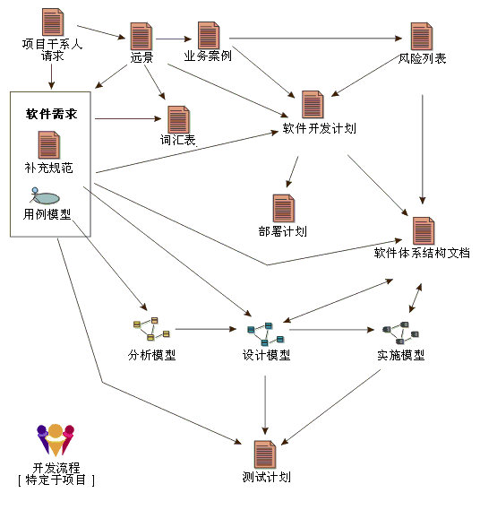

| 工作产品 |
 |
|
关系
主要描述
工作产品是抽象概念，它概括具体的工作产品类型 － 工件、成果和可交付件。工作产品描述实际表示工作产品类型，即工作产品实例是特定工作产品类型的描述而不是单个工作产品实例。但是，为了简化和降低误解的风险，在 UMA 中，我们没有对每个元素附加“类型”一词。 工作产品是有关内容元素的描述的抽象，内容元素用于定义由任务使用、生产或修改的所有对象。角色使用工作产品来执行任务并在执行任务的过程中生产工作产品。工作产品由单个角色负责，这样就容易识别和理解职责，并推广了方法中生成的每段信息都需要一组适当技能的观念。 即使一个角色可能“拥有”特定类型的工作产品，其他角色仍然可以使用这些工作产品；如果给予这个角色许可权，则它可能甚至可以更新这些工作产品。  软件开发中的常见工作产品以及它们之间大致的依赖关系。 请注意，“工作产品”是一个术语，用于描述其他流程使用诸如工件和工作单元等术语表示的内容。在 UMA 中，可交付件仅被视为最终将交付给客户和用户的所有工作产品的一小部分，通常作为正式或在合同上达成一致的交接的一部分。 |
© Copyright IBM Corp. 1987, 2005 All Rights Reserved |